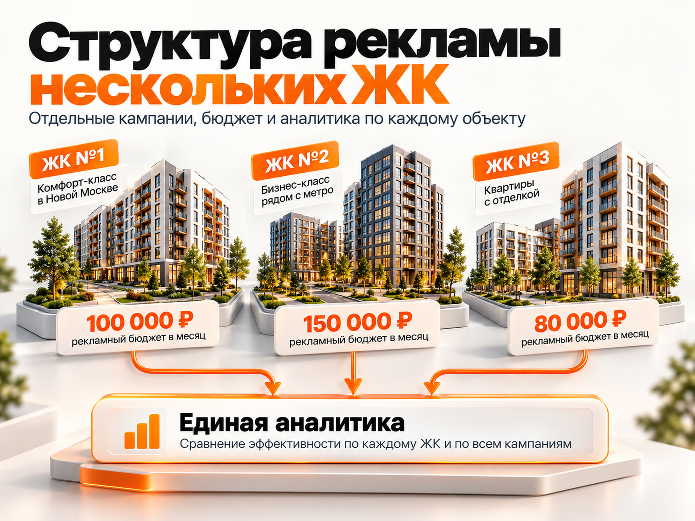

Яндекс Директ
Яндекс Директ для застройщика: как привлекать покупателей квартир и управлять рекламой ЖК
Яндекс Директ для застройщика - инструмент привлечения покупателей квартир, продвижения жилых комплексов и управления спросом на отдельные объекты. Рекламу можно запускать на Поиске Яндекса, в РСЯ и специализированных форматах для недвижимости.
При этом эффективность зависит не только от количества заявок. Застройщику важно понимать, какие ЖК получают обращения, сколько покупателей проходят квалификацию, записываются на просмотр, бронируют квартиры и доходят до сделки.
Главный принцип: рекламную систему нужно строить вокруг экономики каждого жилого комплекса и качества обращений, а не вокруг общего CPL по всем кампаниям.
В этой статье разберу структуру продвижения, работу с поисковым спросом, расчёт рекламного бюджета и собственные результаты рекламы недвижимости.
Чем реклама застройщика отличается от обычной контекстной рекламы
Главная особенность - длинный цикл продажи и высокая стоимость продукта. Покупатель может сравнивать районы, планировки, застройщиков и условия покупки несколько недель или месяцев, прежде чем оставить заявку.
Дополнительная сложность возникает, когда компания одновременно продаёт квартиры в нескольких жилых комплексах.
У разных объектов отличаются:
- расположение и транспортная доступность;
- класс жилья и стоимость квадратного метра;
- доступные планировки;
- сроки сдачи и готовность домов;
- узнаваемость жилого комплекса;
- спрос и конкуренция;
- конверсия обращений в сделки.
Поэтому одинаковый рекламный бюджет не гарантирует одинаковый результат.
Например, в моём проекте по продаже студий площадью 10-20 м² в нескольких ЖК Москвы средняя стоимость заявки с формы составляла 528 ₽. Однако по отдельным объектам показатель колебался от 300 до 5000 ₽.
Если ориентироваться только на общую статистику, эту разницу легко не заметить.
Подробнее: кейс по продаже студий в Москве.
Что подготовить перед запуском Яндекс Директа
Настройку рекламы застройщика лучше начинать с задач бизнеса, а не со сбора ключевых фраз.
Для каждого ЖК необходимо определить, какие квартиры сейчас приоритетны для продажи, какую аудиторию нужно привлечь и какую стоимость клиента допускает экономика проекта.
До запуска я рекомендую согласовать следующие показатели:
| Показатель | Зачем нужен |
|---|---|
| Остаток квартир | Понять, что именно нужно продавать |
| План продаж | Определить необходимое количество сделок |
| Целевая аудитория | Выбрать регионы и сегменты покупателей |
| Допустимый CAC | Установить предельную стоимость привлечения покупателя |
| Конверсия отдела продаж | Рассчитать потребность в заявках |
| Бюджет на ЖК | Распределить расходы между объектами |
| Критерии квалификации | Отделить потенциальных покупателей от нецелевых обращений |
Отдельно нужно проверить сайт, Яндекс Метрику, коллтрекинг и возможность получать из CRM информацию о дальнейшей судьбе обращений.
Если CRM не связана с рекламой, придётся оценивать эффективность по формам и звонкам, не понимая, какие кампании действительно приводят покупателей.
Какие поисковые запросы использовать для рекламы ЖК
Семантику нужно разделять не только по ключевым словам, но и по намерениям потенциального покупателя.
Человек, который ищет «новостройки Москва», и пользователь с запросом «двухкомнатная квартира возле метро Саларьево» находятся на разных этапах выбора.
Для них желательно использовать разные рекламные сообщения и посадочные страницы.
| Поисковый интент | Пример запроса | Куда направлять трафик |
|---|---|---|
| Поиск конкретного ЖК | ЖК «Название» купить квартиру | Страница конкретного комплекса |
| Поиск по району | Новостройки в Новой Москве | Подборка подходящих ЖК |
| Поиск по планировке | Двухкомнатная квартира в новостройке | Каталог подходящих квартир |
| Поиск по бюджету | Квартира от застройщика до 12 млн | Объекты в заданном диапазоне |
| Поиск по готовности | Квартира в сданном доме | Готовые корпуса и квартиры |
| Поиск по способу покупки | Квартира по семейной ипотеке | Страница с актуальными условиями покупки |
Примеры условные. Использовать их нужно только тогда, когда соответствующие предложения действительно есть у застройщика.
Особенно важно согласовать поисковый запрос с содержанием посадочной страницы.
Если пользователь ищет готовую двухкомнатную квартиру, а попадает на главную страницу строящегося ЖК без подходящих вариантов, вероятность обращения снижается.
Брендовые и общие запросы
Запросы по названию ЖК или застройщика нужно анализировать отдельно от общего спроса.
Брендовый трафик часто приходит от людей, уже знакомых с объектом. Но хорошие показатели такой кампании не означают, что реклама эффективно привлекает новую аудиторию.
Общие запросы позволяют расширять охват. При этом за пользователя конкурируют сразу несколько застройщиков, агентств недвижимости и агрегаторов.
Оценивать эти группы по одному среднему CPL некорректно.
Как выстроить структуру рекламных кампаний застройщика
Когда компания продвигает несколько ЖК, я предпочитаю разделять объекты, если это оправдано их экономикой, объёмом данных и необходимостью управлять бюджетом.
Например:
- ЖК №1 - отдельный бюджет и целевые показатели.
- ЖК №2 - собственная посадочная страница и аналитика.
- ЖК №3 - продвижение только отдельных планировок.
- Общие направления - по необходимости, с контролем распределения трафика.
Внутри каждого направления можно отдельно оценивать брендовый, общий и более точный коммерческий спрос.

Это не означает, что нужно создавать десятки небольших кампаний. Чрезмерное дробление особенно вредно, когда у каждой кампании мало конверсий для обучения стратегии.
Принцип разделения простой: отдельное управление нужно там, где различаются коммерческие задачи, целевая экономика или результаты объектов.
Как распределять бюджет между жилыми комплексами
Распределять деньги пропорционально количеству ЖК не всегда разумно.
Приоритет зависит от нескольких факторов:
- Какие квартиры необходимо продать в ближайший период.
- Какой спрос существует по каждому объекту.
- Какой объём квалифицированных лидов дают кампании.
- Сколько стоит привлечение потенциального покупателя.
- Сколько обращений превращается в бронирования и сделки.
Допустим, один ЖК приносит дешёвые заявки, но покупатели редко доходят до показа. Другой комплекс получает более дорогие обращения, однако значительно чаще продаёт квартиры.
Увеличение бюджета первого объекта только из-за низкого CPL может оказаться ошибкой.
При этом иногда бизнесу нужно поддерживать рекламу менее привлекательного ЖК, поскольку существуют обязательства по темпам продаж. В таком случае для него стоит отдельно согласовать допустимую стоимость привлечения покупателя.
Какие форматы Яндекс Директа использовать
Поисковая реклама
Поиск подходит для работы со сформированным спросом: пользователь уже ищет квартиру, определённый район, планировку или конкретный жилой комплекс.
В объявлениях желательно указывать характеристики, которые помогают выбрать предложение:
- район или ближайшее метро;
- тип квартиры и площадь;
- актуальную стоимость;
- срок сдачи или готовность дома;
- наличие отделки;
- доступные условия покупки.
Важны не просто привлекательные заголовки, а соответствие объявления запросу и содержанию сайта.
Поиск может давать качественные обращения, но в конкурентных сегментах стоимость клика и заявки бывает высокой.
Рекламная сеть Яндекса
РСЯ позволяет привлекать аудиторию, которая ещё не ввела конкретный запрос, а также повторно взаимодействовать с посетителями сайта.
Для застройщика здесь можно тестировать разные сценарии:
- знакомство потенциального покупателя с ЖК;
- демонстрацию планировок и преимуществ объекта;
- продвижение отдельных типов квартир;
- возвращение посетителей, изучавших каталог;
- повторное предложение пользователям, которые не завершили обращение.
Креативы желательно строить вокруг конкретных преимуществ объекта, используя реальные изображения ЖК, планировки и актуальные условия продажи.
Результаты Поиска и РСЯ необходимо анализировать раздельно. Одинаковая цена заявки ещё не означает одинаковое качество покупателей.
Единая перфоманс-кампания
Единая перфоманс-кампания (ЕПК) позволяет работать с разными площадками, аудиториями и рекламными объявлениями в рамках инструментов Директа.
Здесь особенно важны корректные цели, управление автотаргетингом, контроль поисковых запросов и анализ эффективности сегментов.
Автоматизация помогает управлять рекламой, но не заменяет понимания того, какие обращения застройщику действительно нужны.
Если алгоритм оптимизируется только на дешёвые отправки форм, он может увеличивать количество заявок без соответствующего роста квалифицированных покупателей.
Поэтому стратегию необходимо настраивать с учётом качества данных и доступного объёма конверсий.
Тематический поиск Яндекса по недвижимости
У Яндекса также есть отдельный инструмент продвижения жилых комплексов в тематических разделах поиска недвижимости.
Он отличается от обычных текстовых кампаний. Пользователь взаимодействует с карточкой ЖК, изучает характеристики объекта, квартиры и способы связи.
Для подключения предусмотрены специальные требования, включая наличие проектной декларации. Информацию о квартирах и условиях продажи можно передавать через XML-фид.
В этом инструменте используется собственная модель размещения с оплатой за целевые звонки.
Для застройщика с большим количеством квартир такой формат стоит оценивать отдельно, учитывая актуальность фида и качество поступающих звонков.
Подробнее: официальная справка Яндекса по рекламе недвижимости.
Каким должен быть сайт застройщика
Посадочная страница должна помогать покупателю выбрать квартиру, а не просто знакомить его с компанией.
Основная информация, которую пользователь должен легко найти:
- расположение ЖК и транспортная доступность;
- актуальные цены;
- доступные квартиры и планировки;
- срок сдачи или готовность объекта;
- фотографии, визуализации и ход строительства;
- отделка и инфраструктура;
- способы покупки;
- документы и сведения о застройщике;
- контакты и способы записи на просмотр.
Необязательно размещать всё на первом экране. Главное, чтобы человек мог быстро перейти от интереса к конкретному объекту к следующему действию.
Каталог квартир или квиз
Выбор зависит от спроса и особенностей продукта.
Если пользователь уже знает конкретный ЖК, ему часто удобнее самостоятельно изучать квартиры, цены и планировки в каталоге.
Квиз имеет смысл использовать, когда покупателю нужна помощь с подбором предложения.
Например, можно последовательно уточнить количество комнат, бюджет, район, срок покупки и способ связи.
Но квиз не стоит внедрять только ради повышения конверсии формы. Он должен помогать отделу продаж получать полезную информацию и не создавать лишних препятствий.
В моём проекте по trade-in недвижимости отдельный лендинг с квизом оказался эффективнее прежнего многостраничного сайта. Однако это не означает, что аналогичный подход обязательно сработает для каждого ЖК.
Воронка продаж: от рекламного клика до сделки
В недвижимости между первым посещением сайта и покупкой может проходить значительное время. Поэтому эффективность рекламы нужно оценивать по нескольким этапам воронки.
| Этап | Что измеряем |
|---|---|
| Переход на сайт | Клики и стоимость трафика |
| Первичное обращение | Формы и звонки |
| Квалификация | Обращения от потенциальных покупателей |
| Встреча или показ | Записи и состоявшиеся посещения |
| Бронирование | Выбор конкретной квартиры |
| Сделка | Фактическая покупка |
Например, две кампании потратили по 60 000 ₽ и получили по 20 заявок.
Формально CPL одинаковый: 3000 ₽.
Но если первая кампания дала 15 квалифицированных лидов, а вторая только 4, стоимость квалифицированного обращения составит:
- Первая кампания: 4000 ₽.
- Вторая кампания: 15 000 ₽.
Разница почти в четыре раза при одинаковом количестве первоначальных заявок.
Это условный расчёт, но он показывает, почему оценка рекламы только по CPL не даёт полноценной картины.
Как передавать качество лидов из CRM в Яндекс Директ
Чтобы рекламная система учитывала действия покупателей после заявки, необходимо связать сайт, Метрику и CRM.
Минимальная схема:
- Пользователь переходит по рекламе на сайт.
- Метрика фиксирует посещение и идентификатор клиента.
- Посетитель отправляет форму или звонит.
- Обращение создаётся в CRM с данными об источнике.
- Отдел продаж квалифицирует клиента.
- Информация о квалификации передаётся обратно в Метрику.
Для сопоставления данных используются идентификаторы, включая ClientID, телефон и электронную почту. Конкретный способ передачи зависит от используемой интеграции.
Желательно дополнительно учитывать бронирования и сделки, если эти данные доступны.
Однако при небольшом числе продаж не всегда разумно оптимизировать рекламную стратегию непосредственно по сделкам. Алгоритму может не хватать конверсий, поэтому рабочим ориентиром иногда становится квалифицированный лид или другой значимый этап воронки.
Промежуточные события, например прохождение квиза, также можно использовать для обучения, но необходимо контролировать, сохраняется ли качество конечных обращений.
Подробности: передача офлайн-конверсий в Яндекс Директ.
Сколько стоит Яндекс Директ для застройщика: расчёт бюджета
Единой стоимости заявки на квартиру не существует. Результат зависит от города, расположения ЖК, цены недвижимости, конкуренции, условий покупки, сайта и работы отдела продаж.
Поэтому прогноз бюджета правильнее строить от необходимого количества квалифицированных лидов, а затем сверять его с экономикой сделок.
Пример расчёта рекламного бюджета
Предположим, застройщику требуется получать 30 квалифицированных обращений в месяц.
Для предварительного медиаплана примем следующие допущения:
| Показатель | Значение |
|---|---|
| Необходимое количество квалифицированных лидов | 30 |
| Доля квалифицированных среди всех заявок | 60% |
| Конверсия сайта из клика в заявку | 2% |
| Предполагаемая стоимость клика | 60 ₽ |
Шаг 1. Определяем необходимое количество заявок.
30 / 0,60 = 50 заявок.
Шаг 2. Рассчитываем количество кликов.
50 / 0,02 = 2500 кликов.
Шаг 3. Рассчитываем рекламный бюджет.
2500 × 60 ₽ = 150 000 ₽.
Получаем предварительный медиаплан:
- Рекламный бюджет: 150 000 ₽.
- Первичные заявки: 50.
- Стоимость заявки (CPL): 3000 ₽.
- Квалифицированные лиды: 30.
- Стоимость квалифицированного лида (CPQL): 5000 ₽.
Если из 30 квалифицированных обращений 10% в итоге становятся покупателями, это примерно три сделки. Расчётная рекламная стоимость привлечения одного покупателя составит 50 000 ₽.
Важно: все показатели в примере условные. Это не средние цены на рекламу новостроек в 2026 году и не прогноз результата конкретной кампании. Фактические значения могут существенно отличаться.
В расчёт также не включены расходы на ведение рекламы, разработку посадочных страниц, CRM и другие сопутствующие услуги.
Как понять, окупается ли реклама
Для оценки эффективности я использую несколько показателей:
CPL = рекламные расходы / количество заявок.
CPQL = рекламные расходы / количество квалифицированных лидов.
CAC = рекламные расходы / количество привлечённых покупателей.
Последняя формула показывает рекламную составляющую стоимости привлечения. Если учитывать также расходы на продажи, подрядчиков и инструменты, можно рассчитывать полный CAC.
Именно стоимость привлечения покупателя нужно сопоставлять с экономикой проекта: маржинальностью квартир, планом продаж и допустимыми затратами на реализацию объекта.
Реальные кейсы рекламы недвижимости
В собственных проектах я сталкивался с разными задачами: продвижением нескольких ЖК, продажей коммерческих помещений от застройщика и привлечением покупателей через программу trade-in.
Результаты отличаются, поскольку в каждом случае были свои условия, аудитория и продукт.
Кейс №1. Продажа студий в нескольких ЖК Москвы
Результаты:
- 528 ₽ - средняя стоимость заявки с формы.
- 300-5000 ₽ - диапазон стоимости заявки между ЖК.
- 2771 ₽ - средняя стоимость звонка.
Продвигались небольшие студии площадью 10-20 м² в нескольких жилых комплексах.
Основная трудность заключалась в неравномерном спросе. По одним ЖК обращения приходили стабильно, по другим - значительно реже и дороже.
Для контроля результатов разделили рекламу по объектам, использовали отдельные посадочные страницы и учитывали заявки с форм вместе со звонками через коллтрекинг UIS.
Практический вывод: если застройщик продвигает несколько комплексов, необходимо видеть экономику каждого объекта отдельно. Средние показатели по всему аккаунту могут скрывать проблемные ЖК.
Полный кейс по продаже студий в Москве.
Кейс №2. ЖК «Ватутинки Парк»: снижение стоимости лида в 3,5 раза
В этом проекте продвигались коммерческие помещения от застройщика в жилом комплексе «Ватутинки Парк» в Новой Москве.
Это не продажа квартир, однако задачи организации рекламы, работы с квалификацией покупателей и ограниченным спросом во многом похожи.
Результаты:
- До оптимизации: 7 заявок по 6000 ₽.
- После оптимизации: в одном из месяцев 26 заявок примерно по 1700 ₽.
- В другом месяце: 12 заявок, из них 10 квалифицированных.
- Снижение CPL: почти в 3,5 раза.
Для улучшения результатов переработали квиз, рекламные сообщения и структуру кампаний. Также использовали промежуточные события воронки для обучения алгоритмов.
Особенностью проекта был лимит обращений со стороны заказчика: ему требовалось не больше 15 лидов в месяц. Из-за этого кампании приходилось периодически ограничивать и останавливать.
Практический вывод: рекламная стратегия должна учитывать не только стоимость обращения, но и реальные возможности отдела продаж. При небольшом количестве финальных конверсий промежуточные события могут помогать обучению, если их качество контролируется.
Данные о фактических сделках заказчик не предоставлял, поэтому делать выводы о стоимости привлечения покупателя по этому проекту нельзя.
Полный кейс ЖК «Ватутинки Парк».
Кейс №3. Trade-in недвижимости: 70 квалифицированных лидов
Ещё один близкий пример - продвижение программы обмена старой квартиры на новую через агентство недвижимости в Екатеринбурге.
За два отчётных периода получили:
- 83 заявки;
- 70 квалифицированных обращений;
- 1774 ₽ - средняя стоимость заявки;
- 2103 ₽ - стоимость квалифицированного лида.
Вместо общего многостраничного сайта использовали отдельный лендинг с квизом. В рекламных кампаниях учитывались как промежуточные события, так и конечные заявки.
Основной объём обращений в этом проекте давала РСЯ.
Кейс показывает, что более низкая цена трафика сама по себе не определяет результат. Важна связка рекламного канала, посадочной страницы, воронки и качества обращения.
Полный кейс по trade-in недвижимости.
Какие объявления лучше использовать для рекламы новостроек
В объявлениях застройщика лучше делать акцент на конкретных характеристиках объекта, а не на общих обещаниях.
Например, вместо фразы «Современные квартиры по выгодным ценам» полезнее указывать расположение, стоимость, планировки или срок готовности дома.
В зависимости от конкретного ЖК можно тестировать следующие акценты:
- квартиры в определённом районе;
- готовые квартиры с отделкой;
- конкретные площади и планировки;
- покупка напрямую у застройщика;
- актуальные ипотечные программы;
- транспортная доступность;
- развитая инфраструктура.
Любую указанную цену и условие покупки необходимо подтверждать актуальной информацией на сайте.
Особенно важно контролировать наличие квартир. Если объект уже продан или условия изменились, реклама не должна продолжать обещать недоступное предложение.
Требования Яндекса к рекламе новостроек
Реклама новостроек и долевого строительства требует соблюдения специальных правил.
В текстовых объявлениях Директ автоматически формирует предусмотренные предупреждения при наличии необходимых сведений о застройщике.
Для этого могут потребоваться наименование юридического лица с организационно-правовой формой и информация о проектной декларации на наш.дом.рф.
В графических объявлениях ЕПК, видео и медийных креативах необходимые предупреждения рекламодатель добавляет самостоятельно.
Отдельное внимание требуется рекламе ипотечных предложений, поскольку она может затрагивать требования к финансовой рекламе.
Перед запуском нужно проверять актуальные правила и соответствие рекламных материалов законодательству.
Официальные требования Яндекса к рекламе новостроек.
Частые ошибки при продвижении жилых комплексов
1. Все ЖК объединены без учёта их экономики.
Бюджет перераспределяется между объектами непрозрачно, становится сложнее анализировать результаты и выполнять планы продаж.
2. Реклама оптимизируется по любой заявке.
Алгоритмы могут привлекать пользователей, склонных оставлять контакты, но не готовых покупать квартиру.
3. Не учитываются звонки.
Без коллтрекинга часть обращений выпадает из аналитики, а показатели CPL и эффективности источников искажаются.
4. Для разных запросов используется одна посадочная страница.
Человек ищет конкретную планировку или ЖК, но вынужден самостоятельно искать нужную информацию после перехода по рекламе.
5. Кампании постоянно включают и выключают.
Частые остановки затрудняют стабильную работу стратегий и анализ результатов.
6. Не учитываются ограничения отдела продаж.
Реклама может приводить больше обращений, чем менеджеры способны обработать.
7. Решения принимаются только по CPL.
Низкая стоимость формы ничего не говорит о количестве бронирований и сделок без информации о последующих этапах воронки.
Частые вопросы о Яндекс Директе для застройщика
Сколько денег нужно для запуска рекламы ЖК?
Бюджет зависит от региона, конкуренции, стоимости клика, конверсии посадочной страницы и необходимого количества заявок. Рассчитывать его лучше от планового количества квалифицированных обращений, а не от универсальной суммы на запуск.
Можно ли рекламировать несколько ЖК в одной кампании?
Технически можно объединять разные объекты, но это не всегда удобно для управления рекламой. Если у комплексов разная экономика, спрос или цели продаж, лучше предусмотреть раздельный контроль расходов и результатов. При этом не стоит чрезмерно дробить кампании с небольшим количеством конверсий.
Что эффективнее для застройщика: Поиск или РСЯ?
Универсального ответа нет. Поиск работает со сформированным спросом, а РСЯ позволяет охватывать дополнительные аудитории и возвращать заинтересованных посетителей. Сравнивать каналы следует по качеству обращений и последующим продажам, а не только по цене заявки.
Как снизить стоимость квалифицированного лида на квартиру?
Проверить соответствие объявлений запросам, качество посадочной страницы, сегментацию по ЖК и передачу данных из CRM. Иногда снизить CPQL удаётся даже без снижения обычного CPL, если увеличивается доля целевых обращений.
Нужно ли подключать CRM к Яндекс Директу?
Для полноценной оценки эффективности это желательно. Передача данных о квалифицированных клиентах, бронированиях и сделках позволяет точнее оценивать рекламные кампании и использовать информацию о качестве обращений при оптимизации.
Можно ли прогнозировать количество продаж из Яндекс Директа?
Да, если известны фактические конверсии между этапами воронки: заявка, квалификация, встреча, бронирование и сделка. До накопления статистики прогноз строится на допущениях и не гарантирует определённого числа продаж.
Что в итоге
Яндекс Директ для застройщика следует рассматривать как часть системы продаж недвижимости, а не только как источник заявок.
На результат влияют структура кампаний, спрос на конкретные объекты, посадочные страницы, качество аналитики и работа отдела продаж.
При продвижении нескольких ЖК особенно важно отдельно оценивать расходы, квалифицированные обращения и дальнейшие результаты по каждому комплексу.
В своих проектах по недвижимости я встречал разницу в стоимости заявок в несколько раз даже между объектами одного бизнеса. Поэтому приоритетом считаю не минимальную стоимость клика, а управляемую экономику продвижения.
Занимаюсь настройкой и ведением Яндекс Директа, созданием посадочных страниц и построением рекламных воронок. Работаю напрямую с заказчиками.
Примеры проектов и контакты: naklikay.ru.